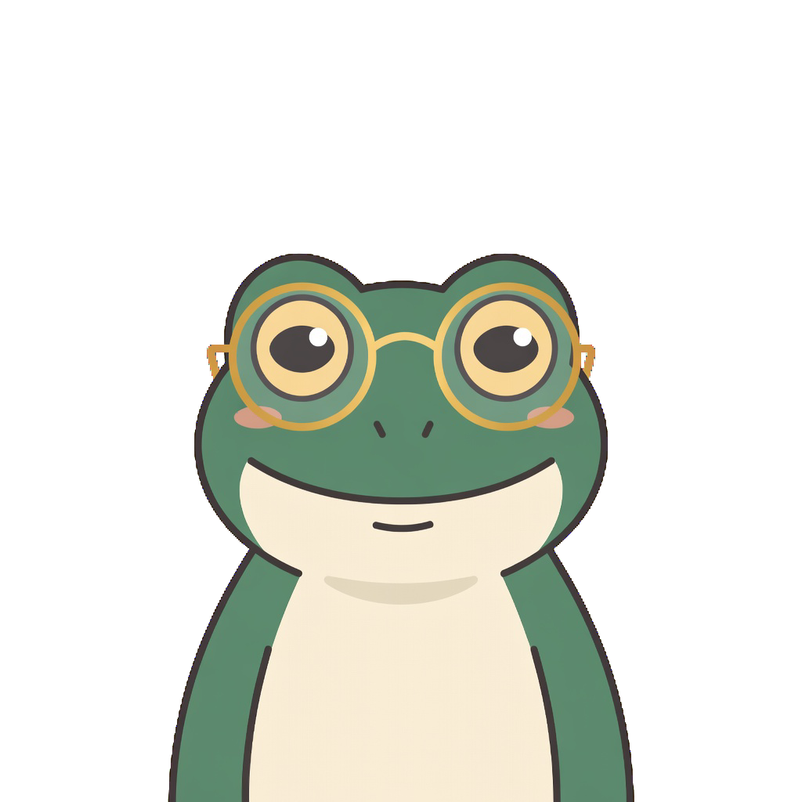
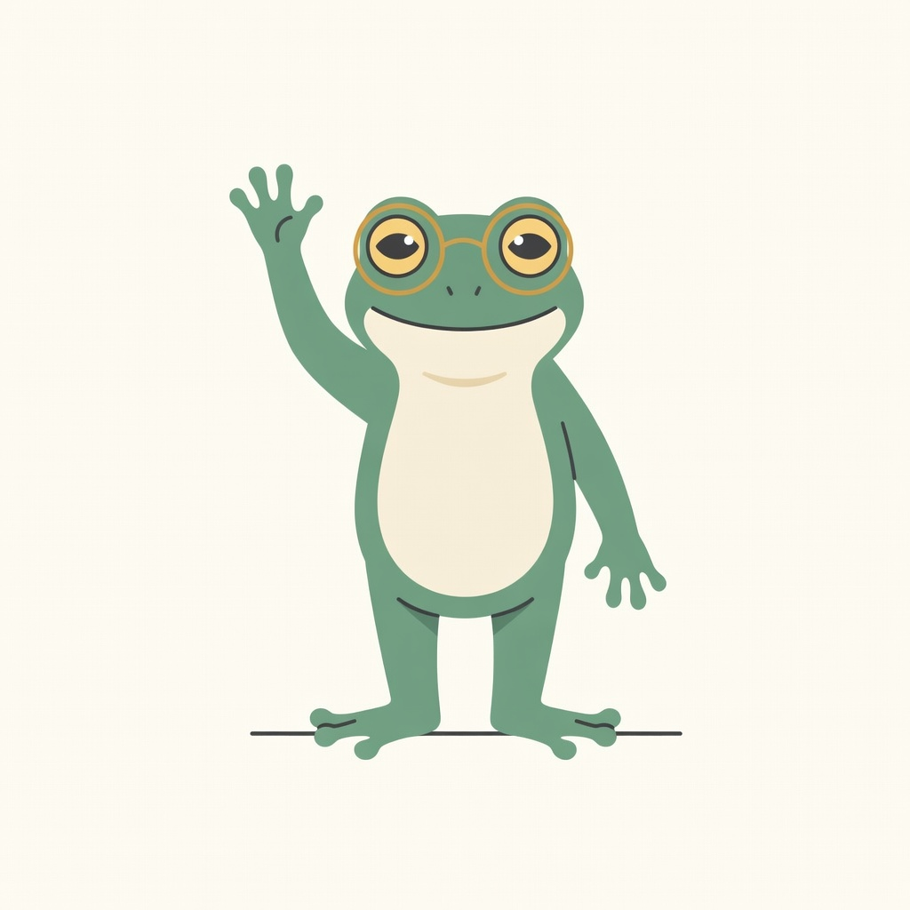

Focus
One pomodoro, one task. Close the tabs, silence the phone, and tell the frog what you're working on — saying it out loud counts.
25 minutesYour intentional productivity companion
Frog Focus turns the classic 25-minute Pomodoro into a productive tool — focused work, gentle breaks, and a frog friend in your corner the whole way.

0 of 4 pomodoros — long break after 4
The what
Pomodoro is a simple rhythm: focus hard for a short stretch, then rest on purpose. Four of those, and you've earned the long break.
Pomodoro is Italian for tomato — the technique is named after the tomato-shaped kitchen timer Francesco Cirillo used as a university student in the 1980s. The tomato was just the timer. It's the daily practice that stuck: work deeply for a stretch, rest on purpose, repeat.
One pomodoro, one task. Close the tabs, silence the phone, and tell the frog what you're working on — saying it out loud counts.
25 minutesStep away. Stretch, sip water, look at something far away. The frog will hold your spot — that's what breaks are for.
5 minutesAfter four pomodoros, take the long break. Walk, nap, snack — this is where creativity happens. Then start the next round fresh.
15 minutesFour focused pomodoros, then a long break — the cycle restarts on its own.

"Pomodoro is the technique. The frog is the friend that helps you get things done." — the pond, probably
The Why
We kept the daily practice and swapped the timer with a friend with better vibes.